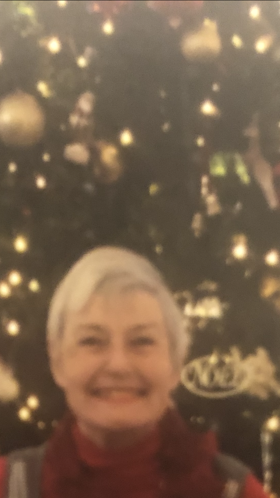

Den haag (geboren) 1935
Leiden 1955-1962 (Unviversiteit)
Den haag 1963-1968 Arbeids redenen
Londen 1968-1969 Arbeids redenen
Californie 1970-1985 Arbeids redenen
Eindhoven 1985-1991 Arbeids/sociale redenen
Californie 1991-2005 Arbeids redenen
Den haag 2005-2016 Sociale redenen 